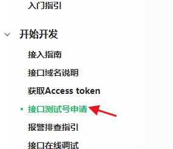

今天突然有个想法，就是把每天的可转债的信息发到手机上，包括今天可以打的新债和今天上市可以交易的新债。之前自己还有个公众号几乎不用，所以想用这个公众号来完成这个任务~
首先列一下需要具备的功能：
- 获取当前的日期星期，判断是否开市。（这里只是简单的考虑到是不是周末，节假日什么的目前这个版本没有考虑进去）
- 上网爬取当天的可转债的数据。
- 获取公众号的端口，实现向固定用户的发送。
首先实现获取日期和星期的操作，用time模块就能做到了，为了方便，我把日期和星期写到了两个函数里。
1
2
3
4
5
6
7
8
9
| import time
def gettime():
timenow = time.strftime('%Y-%m-%d',time.localtime(time.time()))
return timenow
def getweek():
weeknow = time.strftime('%A',time.localtime(time.time()))
return weeknow
|
然后就是爬可转债的信息了，信息来源是集思录的投资日历。动态页面，信息都在XHR里，很好找。
1
2
3
4
5
6
7
8
9
10
11
12
13
14
15
16
17
18
| import requests,json
def getkzz():
week = getweek()
lists = []
if week == "Saturday" or week == "Sunday":
final = '周末没有可转债数据'
lists.append(final)
return lists
else:
url = "https://www.jisilu.cn/data/calendar/get_calendar_data/?qtype=CNV&start=1575216000&end=1578844800&_=1576230677939"
res = requests.get(url)
datas = res.json()
gettimes = gettime()
for data in datas :
if data['start'] == gettimes:
lists.append(data['title'])
return lists
|
第一次写的时候没有注意，if week == “Saturday” or week == “Sunday” 写成了 if week == “Saturday” or “Sunday”，造成无论是哪一天，都会返回周末的结果。
信息都有了，接下来就是用公众号发了。
首先需要进入公众号的开发文档，点击接口测试号申请。（因为我的公众号没认证……）

得到了自己的appid和secret，之后套用以下代码就可以了
1
2
3
4
5
6
7
8
9
10
11
12
13
14
15
16
17
18
19
20
21
22
23
24
25
26
27
28
29
30
31
32
33
34
35
36
37
38
39
40
41
42
43
44
45
46
47
|
def get_access_token():
"""
获取微信全局接口的凭证(默认有效期俩个小时)
如果不每天请求次数过多, 通过设置缓存即可
"""
result = requests.get(
url="https://api.weixin.qq.com/cgi-bin/token",
params={
"grant_type": "client_credential",
"appid": "wx2499da7621f818e8",
"secret": "6239e3dfc5af686777ea40b9f3df5f48",
}
).json()
if result.get("access_token"):
access_token = result.get('access_token')
else:
access_token = None
return access_token
def sendmsg(openid,msg):
access_token = get_access_token()
body = {
"touser": openid,
"msgtype": "text",
"text": {
"content": msg
}
}
response = requests.post(
url="https://api.weixin.qq.com/cgi-bin/message/custom/send",
params={
'access_token': access_token
},
data=bytes(json.dumps(body, ensure_ascii=False), encoding='utf-8')
)
result = response.json()
print(result)
if __name__ == '__main__':
sendmsg('关注者的ID','发送消息内容')
|